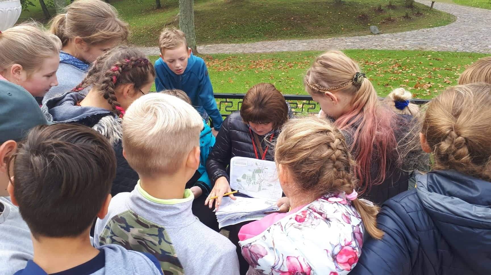

Naujienos

Mokytoja sukūrė išmaniąją ekskursiją vaikams – Lietuvoje tokios tik kelios
Išmaniosios technologijos pritaikomos vis plačiau. Nors Kultūros paso programoje daugiau nei pusantro tūkstančio ekskursijų vaikams, tačiau tokių, kokią sukūrė istorijos mokytoja iš Rokiškio rajono, beveik nėra. Interaktyvios, QR kodais paremtos edukacinės programos vaikams suteikia daug įspūdžių, skatina įsitraukimą ir savarankiškas informacijos paieškas – anot mokytojos, vaikai po ekskursijos išvyksta žibančiomis akimis.